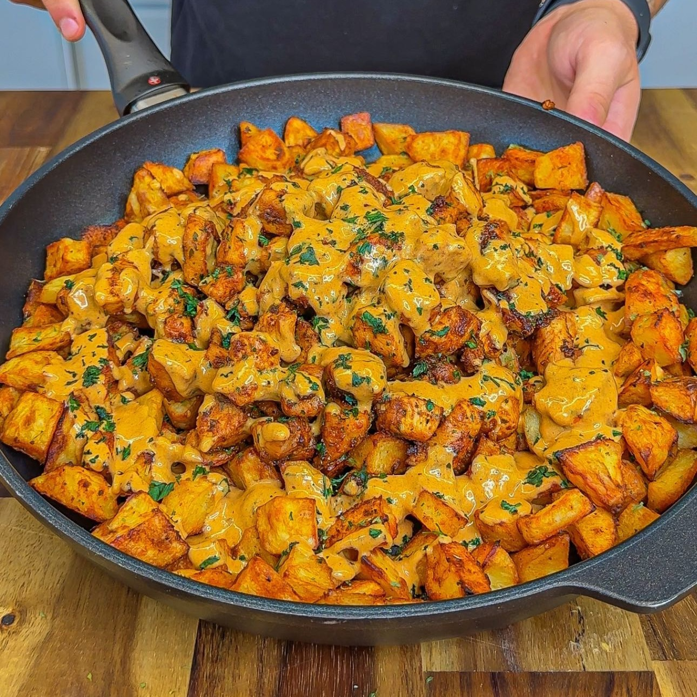

Pollo Cremoso con Papas
Ingredientes:
*4 porciones
- 900g de papas en cubos (Spud Lite Potatoes)
- 1 cucharadita de aceite de oliva
- 1 cucharadita de sal, 1 cucharadita de ajo en polvo y cebolla en polvo, 1 cucharadita de condimento
italiano, 1 cucharadita de paprika ahumada
- 900g de pechuga de pollo sin piel y deshuesada en cubos (peso crudo - marinada con los mismos
ingredientes usados anteriormente en las papas)
- 450ml de leche evaporada sin grasa (Carnation Light & Creamy)
- 1 cucharadita de orégano y 1 cucharadita de ajo en polvo
- 20g de queso mozzarella rallado
- 30g de queso parmesano recién rallado
- 4 dientes de ajo en cubos
- 150ml de caldo de pollo
- 90g de queso crema ligero (o 6 porciones ligeras de queso Laughing Cow)
- 2 cucharaditas de polvo de caldo de pollo / polvo de cubo de pollo (Vegeta bajo en sodio)
- 1 cucharadita de paprika ahumada
Instrucciones:
- Pica las papas en cubos y añade aceite de oliva y las especias de los ingredientes; sal, ajo y
cebolla en polvo, condimento italiano y paprika. Revuelve bien y hornea a 200°C y voltea a la mitad
del tiempo por 30 mins o mandalas a la airfryer a 200°C por 20 a 25 mins.
- Añade aceite de oliva y las mismas especias al pollo y cocínalo a fuego medio alto por 8 a 10 mins.
- Licua la leche, los quesos, y el orégano.
- En la misma sartén del pollo, añade los dientes de ajo y añade el caldo de pollo, la salsa que se
licuó. Después baja el fuego y añade queso crema, polvo de caldo de pollo y paprika. Mezcla hasta
que quede cremoso.
- Mezcla todo.